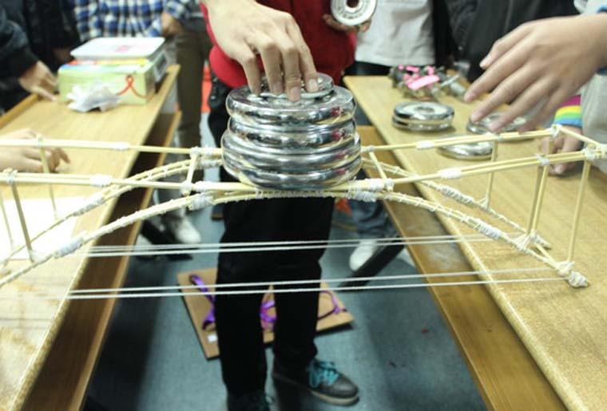

瓯江文化-科技文化节

温州大学瓯江学院科技文化节是由温州大学瓯江学院理工分院主办，融专业技术、创新理念为一体的大型科技文化活动。科技文化节以培养创新技能型人才为主要目的，将理论知识与实践操作相结合，并体现创新思维，以此达到“活跃校园科技氛围，演绎瓯江精神面貌”的目的。
科技文化节共有四个篇章组成，分别是竞赛篇、理论篇、实践篇及体验篇。竞赛篇主要由数学建模、结构设计、CAD设计等竞赛组成，旨在选拔学院的学科竞赛优秀学生，参加更高水平的各类大赛。理论篇由各专业的知识讲座组成，主要给同学们开展一些专业知识如何运用到生活中的讲座。实践篇由桥梁承重设计大赛、船模设计大赛、废旧电子改造大赛等组成，这些大赛都是要同学们将平时所学的理论知识运用到实践当中。体验篇主要由一个个小的趣味体验项目组成。
从2009年10月到2013年6月科技文化节活动已经成功举办了四届，最早是由瓯江学院工学系组织举办。在2012年机建、理学、信电三个分院合并为理工分院后，理工分院将科技文化节在原有基础上进行了扩大创新，从原有的4个常规活动发展到现今的12个特色项目：包括船模设计大赛、桥梁设计大赛、机电维修、废旧电子改造大赛、自行车模型大赛、电子竞赛、电子设计大赛、统计分析大赛、CAD大赛、数学建模大赛、节能车设计大赛等。
通过四年的发展，该品牌活动在专业性和学生参与面上有了显著的提升，科技文化节活动涉及的专业也从原先的两个个增加到了现在的六大专业。可谓形式新颖，专业突出，较好的契合了校园品牌的发展规程，是理工分院品牌活动的龙头项目。
制作人：18电子商务二班鲁海波